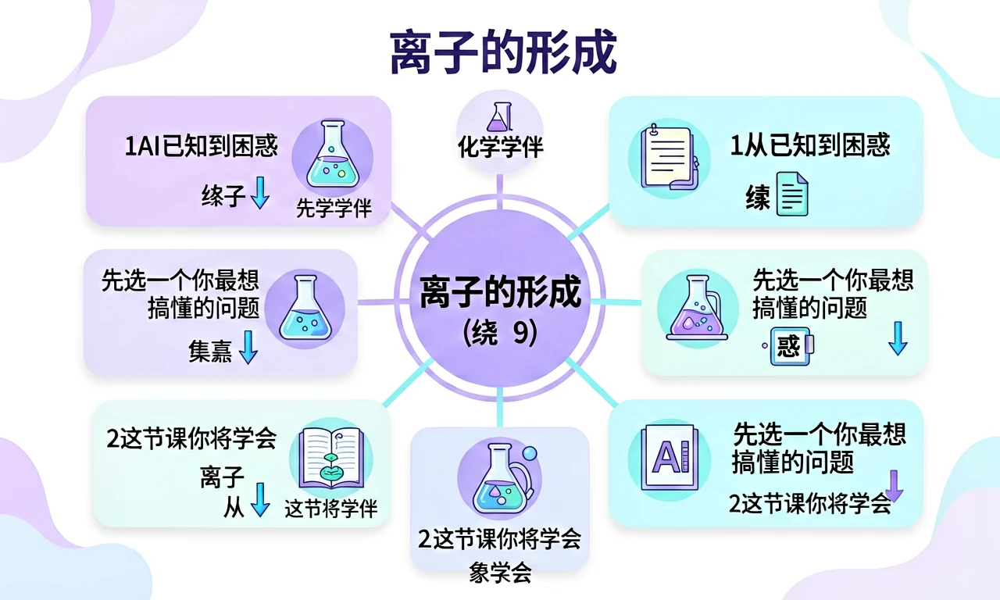

初三 · 化学 · 新概念钠原子和氯原子的"电子交易"——揭开食盐稳定的秘密
我是你的化学小助手。遇到不懂的地方随时问我！
这节课的关键：质子数不变，电子数变 → 电荷变 → 原子变离子。

钠原子（11 个质子，11 个电子）失去最外层 1 个电子后，会变成怎样的粒子？
想象原子是一个"小银行"：质子数（核电荷数）是固定不变的"账户编号"，电子数是流动的"货币"。原子本身电子数 = 质子数，电中性。一旦电子数发生变化——
原子失去电子 → 质子数 > 电子数 → 多出正电荷
金属原子（最外层 1-3 个电子）通常这样做。
原子得到电子 → 质子数 < 电子数 → 多出负电荷
非金属原子（最外层 5-7 个电子）通常这样做。
下面是科罗拉多大学 PhET 的"原子构建器"。你的任务：
左边是 钠原子（Na），最外层 1 个电子；右边是 氯原子（Cl），最外层 7 个电子。拖动钠最外层那个黄色电子，把它送到氯那一边——看看会发生什么。
下列粒子中，属于阳离子的是？
某粒子有 13 个质子、10 个电子，该粒子的离子符号是？
下列说法中，正确的是？
📖 3.3 元素——为什么 H、Na、Cl 这些"名字"如此重要？元素周期表是怎么把它们排成"族"的？我们已经知道质子数是元素的"身份证"，下节课就把这本身份证读懂。
离子是带电的原子或原子团，当原子失去或获得电子时，由于电子带负电，原子核带正电，电子数量的变化会导致原子整体带电。例如，钠原子（Na）最外层有1个电子，容易失去这个电子形成带正电的钠离子（Na⁺）；而氯原子（Cl）最外层有7个电子，容易获得1个电子形成带负电的氯离子（Cl⁻）。离子的形成是化学反应中常见的现象，尤其在盐类化合物中，如食盐（NaCl）就是由钠离子和氯离子通过静电作用结合而成的。离子的带电性质使其在溶液中能够导电，这也是电解质溶液导电的原因。
离子可以分为阳离子和阴离子。阳离子是带正电的离子，通常是金属原子失去电子形成的，如铁离子（Fe²⁺）、铝离子（Al³⁺）等。阴离子是带负电的离子，通常是非金属原子获得电子形成的，如氧离子（O²⁻）、硫离子（S²⁻）等。此外，还有一些复杂的离子团，如硫酸根离子（SO₄²⁻）、铵根离子（NH₄⁺）等。这些离子团在化学反应中作为一个整体参与反应。例如，硫酸铜（CuSO₄）溶于水时会解离出铜离子（Cu²⁺）和硫酸根离子（SO₄²⁻）。离子的分类有助于我们理解化合物的性质和反应规律。
离子的形成通常通过电子转移实现。以氯化钠为例，钠原子（Na）最外层有1个电子，容易失去这个电子形成Na⁺；氯原子（Cl）最外层有7个电子，容易获得1个电子形成Cl⁻。这种电子转移的过程称为电离。电离可以是自发发生的，如金属钠与氯气反应生成氯化钠；也可以是在外力作用下发生的，如电解熔融的氯化钠时，Na⁺和Cl⁻会在电极上得失电子。此外，离子也可以通过共价键的极性断裂形成，如HCl溶于水时，H-Cl键断裂形成H⁺和Cl⁻。离子的形成过程是化学反应的基础之一。
离子的性质与其电荷、大小和结构密切相关。带电量越高，离子的静电作用越强，如Al³⁺比Na⁺更容易与阴离子结合。离子的大小也会影响其性质，较小的离子如Li⁺比Na⁺更容易溶于水。此外，离子的电子排布也会影响其化学性质，如过渡金属离子（如Fe²⁺、Cu²⁺）通常具有颜色，这是因为其d轨道电子跃迁吸收了特定波长的光。离子的性质还表现在其导电性上，如NaCl溶液中的Na⁺和Cl⁻可以自由移动，因此能够导电。理解离子的性质有助于预测化合物的行为和用途。
离子键是阳离子和阴离子之间通过静电作用形成的化学键。离子化合物是由离子键结合而成的化合物，如NaCl、CaO等。离子键的特点是键能较高，因此离子化合物通常具有较高的熔点和沸点。例如，NaCl的熔点为801℃，远高于分子化合物如水的熔点。离子化合物在固态时以晶体形式存在，离子排列成规则的晶格结构，如NaCl晶体中每个Na⁺周围有6个Cl⁻，每个Cl⁻周围有6个Na⁺。这种结构使得离子化合物在固态时不导电，但在熔融状态或溶于水时可以导电。
离子在日常生活中有着广泛的应用。例如，食盐（NaCl）中的Na⁺和Cl⁻是人体必需的电解质，维持体液平衡和神经传导。钙离子（Ca²⁺）是骨骼和牙齿的主要成分，也是肌肉收缩和血液凝固的重要参与者。此外，离子还被用于水处理，如用铝离子（Al³⁺）絮凝去除水中的悬浮物；在电池中，锂离子（Li⁺）的移动实现电能的存储和释放。离子交换树脂则利用离子交换原理软化硬水。理解离子的应用有助于我们更好地利用化学知识解决实际问题。
离子的检测通常依赖于其特定的化学性质。例如，可以通过焰色反应检测金属离子：钠离子（Na⁺）使火焰呈黄色，钾离子（K⁺）呈紫色。阴离子的检测则常用沉淀反应，如氯离子（Cl⁻）与银离子（Ag⁺）反应生成白色沉淀（AgCl）。此外，离子色谱法可以同时检测多种离子，如饮用水中的氟离子（F⁻）和硝酸根离子（NO₃⁻）。pH试纸可以检测氢离子（H⁺）和氢氧根离子（OH⁻）的浓度。这些检测方法在环境监测、食品安全和医学诊断中有着重要应用。
离子在生物体内扮演着重要角色。例如，钠离子（Na⁺）和钾离子（K⁺）维持细胞膜电位，是神经冲动传导的基础；钙离子（Ca²⁺）参与肌肉收缩和信号传递；镁离子（Mg²⁺）是许多酶的辅因子。此外，铁离子（Fe²⁺/Fe³⁺）是血红蛋白和细胞色素的核心成分，负责氧的运输和电子传递。氯离子（Cl⁻）则参与胃酸（HCl）的形成，帮助消化。离子平衡的失调会导致疾病，如低血钾症会引起肌肉无力。理解离子的生物作用有助于我们认识生命的化学本质。
1. 你知道原子是如何变成离子的吗？2. 你能举出几种常见的离子吗？3. 离子在生活中有哪些应用？
1. 钠原子失去一个电子后形成的离子是什么？2. 离子化合物在固态时为什么不能导电？3. 如何通过实验检测溶液中的氯离子？
错因：学生常误认为离子是中性原子。误区：混淆离子和原子的性质。诊断：通过对比中性的钠原子和带正电的钠离子，强调电子得失对电荷的影响。
迁移挑战：设计一个实验，探究不同离子（如Na⁺、K⁺、Ca²⁺）对植物生长的影响，并分析其可能的作用机制。